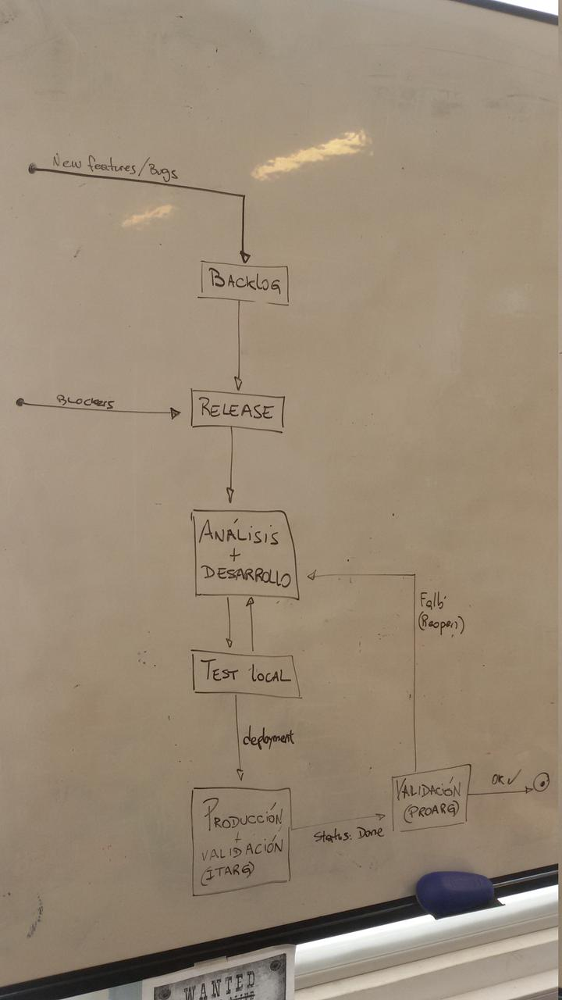
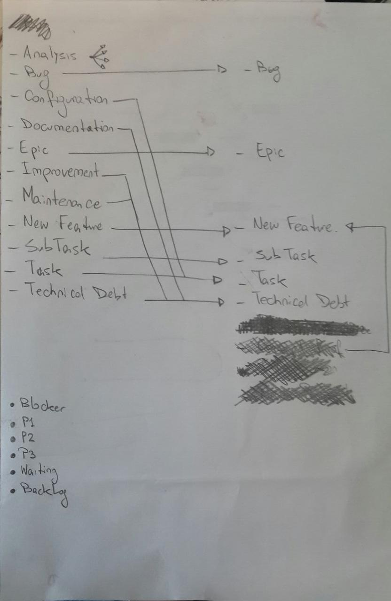

Camino a Kanban II
Ir al post anterior: Camino a Kanban I
Intento #1
Con los datos recopilados en la etapa 1 elaboramos un dashboard donde se reflejara el flujo planteado:
Se planteó un esquema de colores para las prioridades. En la parte inferior central se puede ver la definición del mismo donde se plantea:
- Blanco: Blocker.
- Verde: P1
- Celeste: P2
- Amarillo: P3
- Púrpura: subtareas
Los tickets del backlog eran analizados y una vez colocados en la columna "Analizados" se utilizaban como base para obtener un subconjunto, según las prioridades del negocio, el cual iba a formar el siguiente sprint.
El límite de trabajo en curso (WIP) era considerado por prioridad.
Los tickets bloqueados fueron marcados con una cinta de color.
Los tickets que eran cerrados sin atacar o cancelados eran colocados en la parte inferior derecha (el tacho de basura).
Problemas
En la misma foto se puede apreciar que el esquema de colores fallaba porque la prioridad es una variable (hay tickets de color P1 en la fila de P3): debido a una ventana de oportunidad en el negocio, el objetivo a mediano plazo puede convertirse en uno a corto plazo.
Asignar el límite WIP horizontalmente fue un error de concepto: los mismos deben asignarse por columna.
Intento #2
Habiendo observado los problemas mencionados, se hicieron algunas modificaciones sobre el tablero:

Límite WIP por columna: valores iniciales se plantearon de forma aleatoria.
Se agregó información sobre los epics que están en curso, para ayudar a obtener una imagen top-down del estado del sistema. También se agregó estadísticas obtenidas mediante sprints pasadas:
- Lead time: tiempo promedio de aquellos tickets terminado en cerrarse dentro del sprint (desde que se inicia el sprint hasta que llega al estado "Validación OK"). No se toman fechas pasadas previas al sprint, aunque un ticket haya sobrevivido por más de uno.
- Throughput: Cantidad de tickets promedio que se completan en los sprints. Este número es un promedio de todos los sprints pasados y funciona como una proyección a lo que se debería esperar e incluso mejorar.
Los colores ya no significan nada; la prioridad del ticket está dada por su posición en el tablero.
Problemas
La columna "Analizado" está colapsada. Ésto no se debe a que los valores WIP no están funcionando, sino a que ese estado no está considerado dentro del flujo real del sistema; sólo a partir de la columna "Release". Cualquier avance que pudiéramos hacer respecto al backlog, seguía siendo backlog.
De las epics, no se sabe cuál está en curso y cuál está siendo analizada o en otro estado.
Intento #3
Se extendió el flujo oficial del equipo para absorver más estados:
Los nuevos (o casi):
- A analizar
- En análisis
- Listo para empezar: la antigua columna "Analizado".
- Bloqueado: significa que la tarea está esperando alguna otra de otro equipo.
Ahora el sprint parte del backlog. Las prioridades del negocio nos aconsejan qué tickets deben ser depositados para análisis y en consecuencia son atacados desde esa etapa como parte misma del desarrollo, evitando avanzar a ciegas sobre una tarea.
En la foto no se ve, pero se agregó unas columnas similares para los tickets epics:
- Para empezar
- En curso
- Terminado
Siguientes pasos
Trasladar lo reflejado en el pizarrón a herramientas informáticas.
Camino a Kanban I
Ir al siguiente post: Camino a Kanban II
Hace ya varias semanas que vengo leyendo el libro "Kanban: Successful Evolutionary Change for Your Technology Business" del señor David J. Anderson y me siento muy motivado por él. Al principio lo agarré y pensé oooootra metodología más, otra que viene a salvar el mundo y los proyectos con su agilidad y promesas pero durante la lectura hubieron varios puntos atractivos:
- Tirar de la lista de pendientes en vez de empujar.
- Reducción del multitasking.
- Previsibilidad.
- Creación de tiempos libres para estudiar y/o mejorar los procesos.
Estado actual
En Movile trabajo como coordinador del equipo de Desarrollo de nuestro país. Organizacionalmente estamos asignados para resolver las tareas varios paises del cono sur en los que tenemos injerencia. Para organizar el trabajo utilizamos sprints semanales llamados Releases en los que se plantean las tareas más importantes a atacar, que pueden estar o no en el backlog: integraciones con plataformas de terceros, productos nuevos, mejoras, bugs, etc.
Durante la semana se atacan esas tareas priorizadas y trata de entregar el 100% de las tareas.

Listado en pasos, sería como el siguiente:
- Las tareas se crean y se depositan en la cola del backlog.
- Durante la reunión de release se seleccionan y priorizan las tareas a atacar.
- Es posible que durante la duración del sprint lleguen tareas de máxima prioridad (llamadas blockers) que deben ser atendidas de inmediato. La duración de estas tareas depende mucho de la naturaleza de la misma.
- Durante el sprint se toman tareas asignadas a la release para análisis y desarrollo de las mismas.
- Desarrollada la tarea, se realizan pruebas locales para validar su funcionamiento. En caso de error vuelve al paso anterior.
- Cuando las pruebas locales son exitosas se procede al despliegue en producción del nuevo código. La tarea se marca como lista.
- Se solicita a equipo que valide la nueva funcionalidad en el contexto real. En caso de no satisfacer la necesidad se reabre la tarea y ésta vuelve al paso 4.
- Si la validación es exitosa, esa misma persona cierra la tarea.
- Se solicita al equipo de QA que realice sus validaciones en busca de fallos inadvertidos (no graficado; sólo requerido en cambios visuales o de comportamiento de cara al usuario).
Tipos de tarea y prioridad
Los tipos de tarea que habían eran muy diversos. Multiplicados por la cantidad de niveles de prioridad había una cantidad nefasta de tipos de servicio [1] donde no se tenía en claro qué se esperaba de cada uno:
- Analysis
- Bug
- Configuration
- Documentation
- Epic
- Improvement
- Maintenance
- New feature
- Task
- Sub-task
- Technical debt
Y los niveles de prioridad, en orden decreciente de importancia:
- Blocker
- P1
- P2
- P3
- Waiting/planned
- Backlog
Primeros pasos hacia Kanban
El primer paso fue hacer limpieza sobre los tipos de tarea:

El tipo Analysis no está asignado a uno en particular porque fue manipulado con más detalle: basado en el contenido fue movido a uno u otro tipo de tarea. El resultado final fue este conjunto reducido de tipos:
- Bug
- Epic
- New feature
- Task
- Sub-task
- Technical debt
No está en la foto, pero las proridades también sufrieron cambios, aunque no mucho:
- Blocker
- P1
- P2
- P3
- Backlog
Siguentes pasos
Crear una pizarra Kanban para reflejar los estados y obtener estadísticas iniciales.
Ir al siguiente post: Camino a Kanban II
| [1] | Acuerdo de Nivel de Servicio (ANS): https://es.wikipedia.org/wiki/Acuerdo_de_nivel_de_servicio |